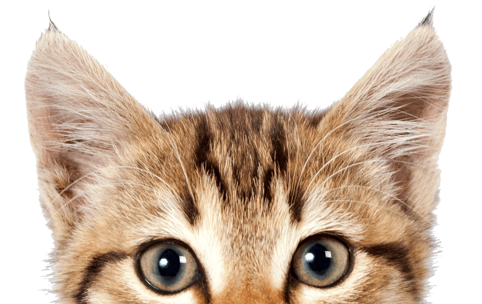

Что нужно котику дома
Чтобы кот чувствовал себя хорошо, ему нужны миски для еды и воды, чистый лоток, место для отдыха и игрушки. Ещё важно, чтобы у кота была возможность точить когти, иначе он может выбрать для этого мебель.
Питание
Кормить котика нужно регулярно. Важно, чтобы еда подходила именно кошкам, потому что человеческая еда не всегда безопасна для животных. Например, сладости, лук, чеснок и некоторые другие продукты котам давать нельзя.
Гигиена и здоровье
За котиком нужно наблюдать: если он стал вялым, перестал есть или ведёт себя необычно, это может быть признаком болезни. Также важно следить за чистотой лотка, состоянием шерсти и когтей.